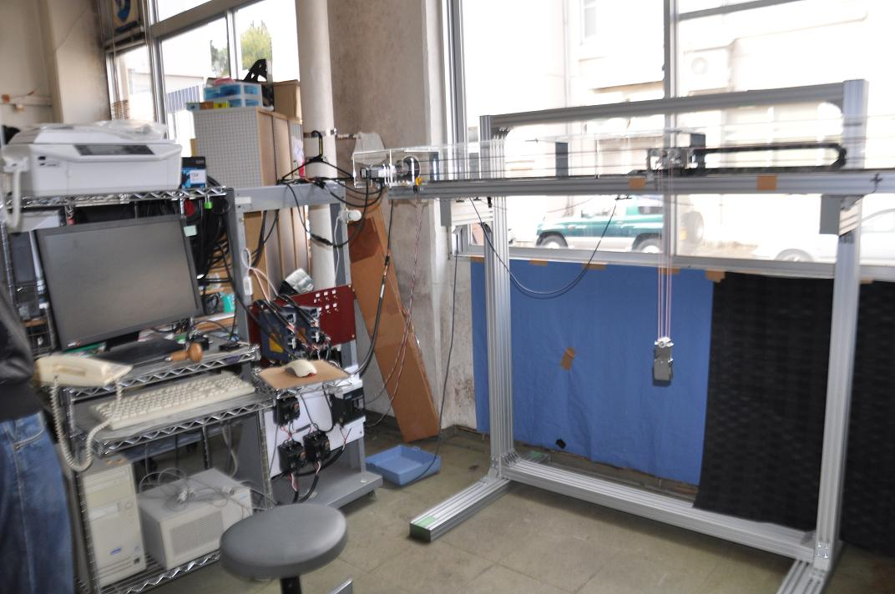

クレーン
|  | |
無駄時間を持つ大型クレーンの振れ止め制御
港湾においてコンテナ船から積み荷であるコンテナを荷役するキーサイドクレーンや工場などにおける重量物を搬送する天井クレーンなどは，吊荷を目標位置に移動させるときトロリを加減速させることからロープで吊られた振り子系が励起されます。 このクレーン荷役における吊荷の振れは，作業効率と安全性を低下させる原因となります。
そこで，制御入力と同周期のオブザーバによる振れ角推定オブザーバと検出遅れ時間と同周期のオブザーバによる遅れ補償オブザーバを用いて，吊荷の振れ角を推定しつつパラメータ誤差によるずれを補正します。 振れ角推定オブザーバはクレーンの運動モデルから状態方程式を導出し，ここから推定振れ角を出力するオブザーバを構成します。 遅れ補償オブザーバは，検出した振れ角を用いて状態量を修正し，推定振れ角オブザーバの計算に用いる状態量として代入します。